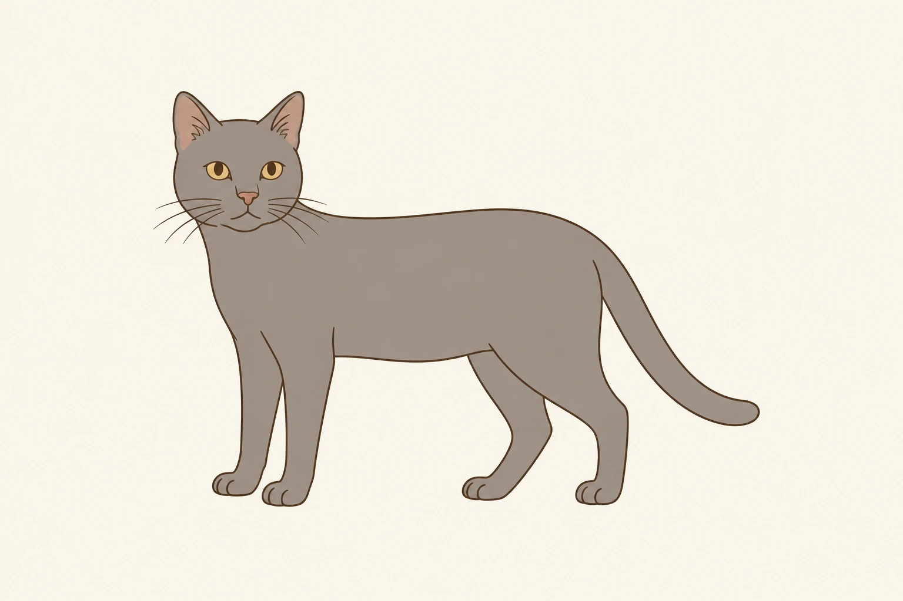

« Un chat, c'est bon pour les enfants. » On l'entend partout, et on a très envie d'y croire.
Les études racontent quelque chose de plus utile : ce qui compte, c'est la relation, et le chat en fixe les règles. Comme d'habitude.
L'essentiel, en 3 niveaux
Tout ce qu'on lit sur les enfants et les chats n'a pas le même poids. Certaines choses ont été mesurées sur des dizaines de milliers d'enfants. D'autres jamais.
Solide
Les enfants s'attachent à leur chat.
Un chat ne donne pas d'asthme à l'enfant.
Le chat est moins câlin avec les petits qu'avec les adultes.
Une piste
Plus le lien est bon, mieux l'enfant va.
Un chat qu'on laisse choisir se montre plus détendu.
Pas démontré
Le chat rendrait l'enfant plus empathique.
Il le rendrait moins anxieux.
Il le protégerait des allergies.
Enceinte, on garde son chat
Là-dessus, je prends position : abandonner son chat parce qu'on attend un enfant, c'est inacceptable. Avoir un enfant est un choix. Prendre un chat l'était aussi, avant. Un chat n'est pas un être de second rang qu'on rend quand un bébé arrive.
Ça arrive quand même : parmi les chats confiés aux refuges britanniques, une grossesse ou l'arrivée d'un jeune enfant fait partie des raisons données.1 Pendant la grossesse, ce qu'on reproche au chat, c'est la toxoplasmose. Dans une grande étude européenne, près d'une femme enceinte sur deux citait le chat quand on lui demandait comment éviter cette maladie.
Toxoplasmose : le chat mis hors de cause
L'étude européenne le met hors de cause. Dans 6 grandes villes, les chercheurs ont comparé des femmes enceintes qui venaient d'attraper la toxoplasmose à d'autres qui ne l'avaient pas. Avoir un chat, même un chat qui chasse, ou vider sa litière n'augmentait pas le risque. Ce qui comptait, c'était d'abord la viande pas assez cuite, puis le contact avec la terre, en jardinant par exemple.2
L'explication tient au parasite. Un chat ne le rejette qu'une fois dans sa vie, pendant quelques jours, quand il l'attrape pour la première fois. Un chat qui ne chasse pas et mange des croquettes ou de la pâtée a d'ailleurs peu d'occasions de l'attraper. Dans les crottes de chats analysées, on ne le trouve presque jamais.3
Ce qu'il rejette n'est pas contaminant tout de suite : il lui faut 1 à 5 jours à l'air libre.3 Une litière vidée chaque jour ne lui laisse donc pas ce temps. Pour moi, un légume mal lavé, c'est plus inquiétant que ça. Le chat reste à la maison.
Quand le bébé arrive
Avec un bébé, votre vie bascule. Pour votre chat aussi, tout change, et on en parle moins.
Mes amis, mes clients ou des bénévoles de la protection féline qui ont eu un enfant racontent la même chose : les premiers jours et les premières semaines, le chat se retrouve délaissé. C'est logique, le bébé devient la priorité : il ne peut rien faire seul, alors que le chat se débrouille. Pour lui, le changement est réel. On ne joue plus avec lui, on lui accorde moins d'attention. S'il aimait les câlins, il en reçoit beaucoup moins, parce qu'on allaite, qu'on porte le bébé, qu'on est épuisé et qu'on oublie des choses. Et sa place dans la maison n'est plus la même : les odeurs changent, les affaires changent.
Alors il s'installe dans le cosy, dans la poussette. On y voit de la jalousie, mais c'est une lecture d'humain. Le chat, lui, est perturbé. Il vit un choc et un stress, une période d'adaptation, et il cherche un endroit confortable, et l'attention qu'il a perdue.
Une équipe de l'université d'Édimbourg a interrogé des mères qui venaient d'avoir un bébé. Leur récit ressemble à ce que j'entends autour de moi : moins de temps pour l'animal, moins d'attention, moins de jeu, parfois une gamelle oubliée quelques heures. L'une d'elles avait un chat qui se blottissait contre son ventre pendant la grossesse. Après la naissance, il a pris ses distances.4 Une de mes clientes m'a raconté exactement ça, peu après son accouchement.
Ces récits sont ceux des mères. Ce que vit le chat lui-même, personne ne l'a encore étudié. On sait seulement ce que lui fait une routine bousculée. Des chats suivis en laboratoire, dont on changeait les soigneurs et les horaires, mangeaient beaucoup moins et faisaient bien plus souvent leurs besoins hors de la litière.5 Quand on arrête de jouer avec lui, comme souvent après une naissance, les propriétaires décrivent surtout un chat qui réclame de l'attention, et qui miaule plus.6
L'accompagner
Pour limiter ce bouleversement, International Cat Care, une association britannique pour le bien-être des chats, donne des conseils. Ils ne citent aucune étude. Ils sont concrets :7
faire les changements dans la maison petit à petit, avant la naissance ;
si c'est la future mère qui le nourrit, confier ce rôle à quelqu'un d'autre avant la naissance ;
lui faire sentir un vêtement porté par le bébé avant son retour à la maison ;
lui garder des refuges hors de portée, et en ajouter quand le bébé commence à se déplacer ;
ne jamais le laisser seul avec le bébé, et toujours un adulte à côté quand ils se touchent ;
plus tard, poser votre main sous celle de l'enfant pour guider la caresse, main à plat, loin des pattes et du ventre.
L'ASPCA, une association américaine de protection des animaux, ajoute un geste simple. En rentrant de la maternité, retrouvez d'abord votre chat, au calme, dans une pièce tranquille. Quelques minutes plus tard seulement, faites entrer le bébé et le reste de la famille.8
Dans l'étude d'Édimbourg, les mères qui avaient préparé l'arrivée du bébé en pensant à leur animal s'inquiétaient moins de la cohabitation. Celles qui manquaient d'aide pour s'en occuper en venaient parfois à envisager de s'en séparer.4
Allergies et asthme
Côté santé de l'enfant, une question revient souvent : votre chat va-t-il rendre votre bébé allergique ? L'idée inverse circule tout autant : le chat le protégerait des allergies. Les deux ont été vérifiées sur des dizaines de milliers d'enfants européens.
Ce qu'on entend, et ce qui a été mesuré
Ce qu'on entend
Ce qui a été mesuré
« Un chat donne de l'asthme »
Aucun lien, d'après les grandes études européennes, France comprise.9
Les chercheurs en tirent une consigne claire : on ne devrait conseiller à personne ni d'éviter un animal, ni d'en prendre un pour prévenir l'asthme de son enfant.10 Vous n'avez donc pas à choisir entre votre enfant et votre chat, ni à en adopter un pour le protéger.
Un cas reste à part : l'enfant déjà allergique au chat. Chez lui, l'asthme est nettement plus fréquent, avec ou sans chat à la maison. La présence du chat aggrave-t-elle les choses ? On ne le sait pas.9 C'est une question pour son médecin, avec les résultats de ses tests en main.
Microbes et hygiène
Se laver les mains après avoir touché un animal ou de la terre, et avant de les porter à la bouche : c'est la base, pour tout le monde, chat ou pas. Un enfant de moins de 5 ans, on le surveille de toute façon.
J'ai grandi en Russie, au début des années 1990. On était très pauvres. En bas des immeubles, les cours étaient nues, avec des jeux d'enfants en métal vraiment dangereux, et des bacs à sable. Tous les chats errants du quartier, ceux qui vivaient autour des poubelles, s'en servaient comme d'une litière géante. Mieux valait ne pas se mettre les doigts dans la bouche après. Mais des parents attentifs et des mains lavées font l'essentiel. Je n'en suis pas morte, et je n'ai même jamais été gravement malade.
On le traite en bébé
Puis votre bébé grandit, et découvre le chat à son tour. Devant un chaton, vous fondez. C'est un réflexe, et le zoologiste Konrad Lorenz lui a donné un nom : le « schéma du bébé ». Une tête ronde, un petit nez, une petite bouche. Plus un visage a ces traits, plus on le trouve mignon, et plus on a envie de s'en occuper.11
Les enfants y sont sensibles dès 3 ans. Des chercheurs ont montré à des enfants de 3 à 6 ans des photos d'humains, de chiens et de chats, retouchées pour paraître plus ou moins « bébé ». Quelle que soit l'espèce, ils regardaient plus longtemps la version la plus bébé.12
La même équipe rappelle une théorie connue, la néoténie : en domestiquant le chat et le chien, on leur aurait fait garder à l'âge adulte des traits de petit. Ce serait pour ça qu'ils nous attirent autant. Reste à savoir ce qui fait une tête de chaton. Les mesures prises sur leurs photos le montrent.12
Ce qui change entre un chaton et un chat adulte
Mesures moyennes, rapportées à la taille de la tête ou du visage
Longueur du nez, en part de la tête
Chaton23 %
Chat adulte29 %
Largeur de l'œil, en part du visage
Chaton15 %
Chat adulte16 %
ChatonChat adulte
Le nez raccourcit chez le chaton, l'œil garde la même proportion.12
Rapporté à son visage, l'œil du chaton n'est pas plus grand. Ce qui fait « bébé », c'est sa tête plus ronde, son nez et sa bouche plus courts.
Le chat adulte a-t-il gardé ces traits, comme le dit la néoténie ? Pour le savoir, on le compare à son ancêtre sauvage. Les mesures de crânes ne vont pas dans ce sens : son museau n'est pas plus court que le sien.13 Il n'a donc pas une tête de bébé. C'est nous qui le traitons en bébé.
Un bébé, on le prend dans les bras. C'est peut-être pour ça qu'un jeune enfant veut porter son chat. Personne ne l'a mesuré. Le chat, lui, n'a pas du tout le même avis.
Ce qu'en pense le chat
Votre enfant de 4 ans le suit dans le couloir pour l'attraper, et le chat file sous le lit. Vous n'avez rien raté. Beaucoup de chats font pareil avec les petits, et une grande enquête auprès de familles l'a chiffré.
Les chats sont moins câlins avec les plus petits
Part des chats au moins moyennement affectueux, d'après les parents
Avec les adultes81,6 %
Avec les 6-8 ans68,5 %
Avec les 3-5 ans54,3 %
Le point de comparaisonAvec les enfants
Enquête auprès de familles avec enfants, aux États-Unis, au Canada et en Europe.14
Regardez la pente : plus l'enfant est jeune, moins le chat se montre affectueux avec lui. Les auteurs en concluent que c'est souvent le chat, plus que l'envie de l'enfant, qui fixe les limites de la relation.
Ils en tirent 2 conseils si vous adoptez avec de jeunes enfants. Un chat entre 1 et 6 ans a plus de chances d'être affectueux avec eux qu'un chat plus âgé. Un chat câlin avec vous ne le sera pas forcément avec un enfant de 3 ans.
Pour moi, cette distance est logique. Un petit enfant est imprévisible. Il ne sait pas encore respecter les besoins du chat, ni repérer les signaux qui lui disent d'arrêter. Le chat se tient donc à l'écart, et il a raison.
Croire qu'un enfant devrait lui plaire parce qu'il est mignon, c'est prêter au chat un regard d'humain. Le schéma du bébé a été mesuré chez nous. Chez les autres espèces, on ne l'a presque jamais vérifié.15
Si le chat garde ses distances avec votre enfant, ne vous inquiétez pas : il a de bonnes raisons. C'est aux parents d'apprendre à l'enfant à bien se comporter avec lui. Les 3 règles plus bas sont faites pour ça.
Quand le chat mord
Les morsures suivent la même pente. Dans une région d'Espagne où les centres de santé les recensent, les enfants étaient un peu plus souvent mordus ou griffés que les adultes. Ils étaient nettement plus souvent touchés au visage, parce que leur tête arrive à hauteur de celle du chat.16 Presque toutes ces morsures étaient provoquées, et venaient du chat de la maison.
Ce qui se passait quand le chat a mordu
Morsures de chat dont on connaît le contexte, tous âges confondus
Il avait peur, on l'attrapait ou on l'approchait38 %
Un geste qui lui faisait mal16 %
Une caresse, un repas, un brossage15 %
Le jeu9 %
On s'interposait face à un autre animal6 %
Autre16 %
La peur arrive en tête, et de loin : un chat qu'on attrape, un chat qu'on approche. Ce sont aussi les gestes d'un enfant qui veut un câlin.
Ces gestes-là, on peut les remplacer par d'autres. Le chat voit la différence. Dans un grand refuge londonien, des chercheurs ont appris 3 règles simples à des volontaires avant de les laisser caresser des chats. Ils les ont appelées CAT, pour choix, attention et toucher.17 Ça, un enfant peut l'apprendre.
1
Il vient à vous
On tend la main et on attend. S'il se frotte, c'est oui. S'il part, on ne le suit pas.
2
Sur la tête
La base des oreilles, les joues, le dessous du menton. Ni le ventre, ni la base de la queue.
3
Une pause, souvent
Toutes les 3 à 5 secondes, on arrête. S'il ne redemande pas, il a besoin d'une pause.
Où caresser un chat

Oui : la base des oreilles, les joues, sous le mentonSeulement s'il est d'accord : le dos, les flancs, les pattes, la queueNon : le ventre, la base de la queue
La plupart des chats, pas tous : le vôtre peut avoir ses propres préférences.17
Au refuge, la différence a été nette : moins de chats ont feulé, donné un coup de patte ou mordu.
Ce que les 3 règles changent pour le chat
Part des chats du refuge qui ont feulé, donné un coup de patte ou mordu
Sans les 3 règles27 %
Avec les 3 règles16 %
Ils se frottaient aussi plus souvent contre la personne. Les caresses, elles, duraient moins longtemps : les auteurs le résument par « moins, c'est mieux ».17
Ces volontaires étaient des adultes. Une seule équipe a essayé avec des enfants. Ils avaient un trouble du développement, et ont appris ce genre de gestes en quelques séances, avec leur propre chat.18 Un an plus tard, plus de chats se servaient de leur enfant comme d'une base rassurante. C'est ce que mesure le test d'attachement présenté dans l'article sur les idées reçues. Dans les familles qui n'avaient pas suivi les séances, rien n'avait bougé.
C'est un petit essai, et ses auteurs demandent qu'on le refasse à plus grande échelle. C'est quand même la première fois qu'on mesure l'attachement d'un chat à un enfant. Il a progressé chez les chats dont l'enfant avait appris.
Jouer sans y mettre les mains
Si votre enfant veut jouer avec le chat, c'est une très bonne idée. Il suffit de mettre un objet entre sa main et les griffes. Le manche d'une canne à pêche met cette distance tout seul, et le chat chasse la proie au bout du fil. Après la séance, la canne se range hors de portée, comme tous les jouets à ficelle qu'un chat pourrait avaler.19
🧩 EnrichissementLien affilié
La canne que je sors tous les soirs
Mon meilleur achat de l'année, sans hésiter. Je l'avais déjà conseillée sur Instagram, des abonnées l'ont prise et m'en ont dit la même chose.
Mes chats courent et bondissent avec. Les embouts se changent, lézard, serpent, plumes, poisson. Et surtout ils se détachent : on peut poser la proie au sol et laisser le chat l'attraper pour de bon.
C'est ce qui manque à beaucoup de cannes. Sans embout détachable, les 2 derniers temps n'arrivent jamais.
Laisser votre chat choisir suppose qu'il puisse partir. Pour les vétérinaires, c'est même son premier besoin : un endroit sûr, un coin à lui, souvent en hauteur.19 Avec des enfants, il devient indispensable : c'est là qu'il va quand il en a assez. Pour l'enfant, la règle tient en une phrase : quand il est là-haut, on ne va pas le chercher.
Le haut d'une armoire, une étagère dégagée, un placard aménagé, un arbre à chat. Peu importe l'objet, du moment qu'il en a plusieurs dans la maison.
Dans mon bureau, j'ai un placard intégré avec un panier dedans. Pendant que je travaille, un chat vient souvent s'y lover. D'autres vont se cacher dans une bibliothèque.
Il y a aussi un arbre à chat. Ce n'est ni le plus haut ni le plus cher, mais il est très solide, et c'est celui que j'ai testé :
🧩 EnrichissementLien affilié
L'arbre de mes 6 chats
On l'a depuis un bon moment, et nos chats l'adorent. Ils dorment dans la niche, sautent dessus quand on joue, et il y a presque toujours quelqu'un tout en haut.
Il est large, et il accueille sans problème un grand chat comme Django, mon doyen, qui n'est pas un poids plume.
Seul point faible : avec 6 chats, le griffoir de devant s'abîme, même avec d'autres griffoirs dans la maison. Le reste du sisal tient très bien.
Pour réparer le griffoir de l'arbre, j'utilise ce tapis autocollant. J'en ai aussi collé autour de mon lit. Une fois abîmé, il se décolle, et le tour de lit en dessous reste propre.
Ce n'est pas miraculeux. Il dure quand même assez longtemps, et surtout, les chats adorent le griffer : pour moi, c'est le premier critère.
Reste la question de départ : qu'est-ce qu'un enfant gagne à grandir avec un chat ? Votre enfant lui parle, le cherche en rentrant de l'école, veut qu'il dorme sur son lit. Ce lien existe. Les enquêtes le confirment : les enfants qui vivent avec un chat s'y attachent, et le disent.20
Mais ce lien change-t-il quelque chose pour l'enfant, pour son moral ou sa façon d'être avec les autres ? En Angleterre, des chercheurs suivent depuis leur naissance des milliers d'enfants, dont près d'un sur trois a grandi avec un chat.21 Une fois pris en compte tout ce qui distingue une famille d'une autre, ils ne trouvent presque aucune différence. Leur étude est financée par un fabricant d'aliments pour animaux. Ça rend ce résultat d'autant plus parlant.
Chez les bébés, même constat. Au Japon, une très grande étude a regardé comment se développaient des bébés d'un an : le langage, les mouvements, la relation aux autres. Qu'il y ait un chat à la maison ou non n'y changeait rien.22
En Australie, une autre grande étude a suivi de jeunes enfants jusqu'à 7 ans. Ceux qui vivaient avec un chat étaient un peu moins souvent inquiets ou tristes, et avaient un peu moins de difficultés avec les autres enfants. Ils étaient aussi un peu plus souvent agités, avec du mal à rester concentrés. Les écarts sont petits. L'étude ne dit pas non plus qui influence qui : les parents d'un enfant agité prennent peut-être plus facilement un animal. Elle n'a pas mesuré le lien entre l'enfant et l'animal, ses auteurs le notent eux-mêmes.23
On lit partout que l'animal de compagnie donne confiance en soi à l'enfant, l'aide à se sentir moins seul, à prendre des décisions, et favorise son développement intellectuel. Une revue a repris toutes les études publiées sur le sujet, tous animaux confondus.24
Ce qu'on lit, et ce que disent les études
On lit que l'animal…
Les études
donne confiance en soi
C'est le point le plus étudié, et les résultats partent dans les deux sens.
aide à se sentir moins seul
Observé chez des adolescents. Jamais étudié chez les jeunes enfants.
aide à prendre des décisions
Une seule petite étude, chez des enfants très attachés à leur animal.
favorise le développement intellectuel
Peu d'études, qui ne tiennent pas compte de ce que font les parents.
Les chercheurs notent que la plupart de ces travaux portent sur le chien.
Alors pourquoi entend-on si souvent qu'un animal fait du bien à l'enfant ? Parce que les familles qui ont un animal ne ressemblent pas aux autres. Aux États-Unis, des jeunes qui vivaient avec un animal semblaient plus empathiques que les autres. L'écart disparaissait dès qu'on tenait compte de leur âge et de leur milieu.25 Les auteurs y voient une autre explication. Ce sont peut-être les enfants les plus empathiques qui réclament un animal.
Le lien plutôt que la présence
Si votre enfant est très attaché à son chat, tant mieux. Là où les chercheurs ont mesuré l'attachement, et pas seulement la présence d'un animal, le tableau change. Des enfants très attachés à leur chien ou à leur chat avaient, des années plus tard, moins souvent un diagnostic d'anxiété.26 Des adolescents satisfaits de leur relation avec leur animal allaient mieux au fil des mois.27
Mais ceux qui se confiaient beaucoup à lui allaient moins bien. Le chat n'y est sans doute pour rien : un enfant qui se sent déjà seul se confie plus à lui. Une revue de 29 études, faites surtout sur le chien, trouve que plus le lien est fort, plus l'enfant se montre empathique, avec des résultats parfois contradictoires.28 Ces études décrivent des liens, pas des causes. Prises ensemble, elles vont dans le même sens : avoir un chat ne suffit pas, la relation avec lui pèse plus lourd.
Les aider à s'entendre
Le chat n'est pas là pour rendre votre enfant plus calme ou plus sage. Il peut devenir bien mieux : quelqu'un à qui votre enfant tient, et qui, avec un peu de patience, viendra peut-être le chercher à son tour.
Ce lien se construit, l'essai avec des enfants l'a montré. Le chat y a son mot à dire, et 4 gestes l'aident :
le laisser venir, et ne pas le suivre quand il part ;
la tête et les joues, jamais le ventre ;
une place en hauteur où personne ne va le chercher ;
une canne à pêche pour jouer.
Pour le reste, votre enfant et votre chat sont uniques, chacun à sa façon. Leur histoire ne ressemblera à aucune autre. Laissez-leur le temps de l'écrire.
Pour aller plus loin sur ce qui se passe dans la tête du chat, un livre :
🐾 ComportementLien affilié
Dans la tête d'un chat
Jessica Serra · Le Livre de Poche, format poche. Je l'ai lu pour compléter ce que je savais, et j'y reviens.
Il s'appuie sur la recherche en éthologie et se lit sans jargon. Il remet en place quelques idées reçues sur le comportement du chat.
Sparkes A.H., Human allergy to cats : A review of the impact on cat ownership and relinquishment, Journal of Feline Medicine and Surgery, 2022. Cette revue relaie l'étude britannique de Casey R.A. et coll., Anthrozoös, 2009. Article intégral, en anglais, nouvelle fenêtre
Cook A.J.C., Gilbert R.E., Buffolano W. et coll., Sources of toxoplasma infection in pregnant women : European multicentre case-control study, BMJ, 2000. Article intégral, en anglais, nouvelle fenêtre
Hartmann K., Addie D., Belák S. et coll., Toxoplasma gondii infection in cats : ABCD guidelines on prevention and management, Journal of Feline Medicine and Surgery, 2013. Article intégral, en anglais, nouvelle fenêtre
Stella J.L., Lord L.K. et Buffington C.A.T., Sickness behaviors in response to unusual external events in healthy cats and cats with feline interstitial cystitis, Journal of the American Veterinary Medical Association, 2011. Article intégral, en anglais, nouvelle fenêtre
Henning J.S.L., Nielsen T., Fernandez E. et Hazel S., Cats just want to have fun : associations between play and welfare in domestic cats, Animal Welfare, 2023. Article intégral, en anglais, nouvelle fenêtre
Pinot de Moira A., Strandberg-Larsen K., Bishop T. et coll., Associations of early-life pet ownership with asthma and allergic sensitization : A meta-analysis of more than 77,000 children from the EU Child Cohort Network, Journal of Allergy and Clinical Immunology, 2022. Article intégral, en anglais, nouvelle fenêtre
Lødrup Carlsen K.C., Roll S., Carlsen K.-H. et coll., Does Pet Ownership in Infancy Lead to Asthma or Allergy at School Age ? Pooled Analysis of Individual Participant Data from 11 European Birth Cohorts, PLOS ONE, 2012. Article intégral, en anglais, nouvelle fenêtre
Glocker M.L., Langleben D.D., Ruparel K., Loughead J.W., Gur R.C. et Sachser N., Baby Schema in Infant Faces Induces Cuteness Perception and Motivation for Caretaking in Adults, Ethology, 2009. Article intégral, en anglais, nouvelle fenêtre
Borgi M., Cogliati-Dezza I., Brelsford V., Meints K. et Cirulli F., Baby schema in human and animal faces induces cuteness perception and gaze allocation in children, Frontiers in Psychology, 2014. Article intégral, en anglais, nouvelle fenêtre
Lesch R., Kitchener A.C., Hantke G., Kotrschal K. et Fitch W.T., Cranial volume and palate length of cats, Felis spp., under domestication, hybridization and in wild populations, Royal Society Open Science, 2022. Article intégral, en anglais, nouvelle fenêtre
Palacio J., León-Artozqui M., Pastor-Villalba E., Carrera-Martín F. et García-Belenguer S., Incidence of and risk factors for cat bites : A first step in prevention and treatment of feline aggression, Journal of Feline Medicine and Surgery, 2007. Article intégral, en anglais, nouvelle fenêtre
Haywood C., Ripari L., Puzzo J., Foreman-Worsley R. et Finka L.R., Providing Humans With Practical, Best Practice Handling Guidelines During Human-Cat Interactions Increases Cats' Affiliative Behaviour and Reduces Aggression and Signs of Conflict, Frontiers in Veterinary Science, 2021. Article intégral, en anglais, nouvelle fenêtre
Frank D.H., Darling S., Moore K., Vitale K.R., MacDonald M. et Udell M.A.R., Evaluating a Novel Cat-Assisted Training (CAT) Intervention for Youth with Developmental Disabilities and Their Family Cat, Animals, 2026. Article intégral, en anglais, nouvelle fenêtre
Ellis S.L.H., Rodan I., Carney H.C. et coll., AAFP and ISFM Feline Environmental Needs Guidelines, Journal of Feline Medicine and Surgery, 2013. Recommandations, en anglais, nouvelle fenêtre
Hawkins R.D. et Williams J.M., Childhood Attachment to Pets : Associations between Pet Attachment, Attitudes to Animals, Compassion, and Humane Behaviour, International Journal of Environmental Research and Public Health, 2017. Article intégral, en anglais, nouvelle fenêtre
Purewal R., Christley R., Kordas K. et coll., Companion animals and child development outcomes : longitudinal and cross-sectional analysis of a UK birth cohort study, BMC Pediatrics, 2024. Article intégral, en anglais, nouvelle fenêtre
Minatoya M., Araki A., Miyashita C. et coll., Cat and Dog Ownership in Early Life and Infant Development : A Prospective Birth Cohort Study of Japan Environment and Children’s Study, International Journal of Environmental Research and Public Health, 2020. Article intégral, en anglais, nouvelle fenêtre
Christian H., Mitrou F., Cunneen R. et Zubrick S.R., Pets Are Associated with Fewer Peer Problems and Emotional Symptoms, and Better Prosocial Behavior : Findings from the Longitudinal Study of Australian Children, The Journal of Pediatrics, 2020. Article intégral, en anglais, nouvelle fenêtre
Purewal R., Christley R., Kordas K. et coll., Companion Animals and Child/Adolescent Development : A Systematic Review of the Evidence, International Journal of Environmental Research and Public Health, 2017. Article intégral, en anglais, nouvelle fenêtre
Jacobson K.C. et Chang L., Associations Between Pet Ownership and Attitudes Toward Pets With Youth Socioemotional Outcomes, Frontiers in Psychology, 2018. Article intégral, en anglais, nouvelle fenêtre
Gadomski A., Scribani M.B., Tallman N. et coll., Impact of pet dog or cat exposure during childhood on mental illness during adolescence : a cohort study, BMC Pediatrics, 2022. Article intégral, en anglais, nouvelle fenêtre
Mueller M.K., Callina K.S., Richer A.M. et Charmaraman L., Longitudinal associations between pet relationship quality and socio-emotional functioning in early adolescence, Social Development, 2024. Article intégral, en anglais, nouvelle fenêtre
Groenewoud D., Enders-Slegers M.-J., Leontjevas R. et coll., Children’s bond with companion animals and associations with psychosocial health : A systematic review, Frontiers in Psychology, 2023. Article intégral, en anglais, nouvelle fenêtre
Et sinon, je garde des chats.
Chez vous, en Ille-et-Vilaine. Le chat garde ses repères, vous avez de ses nouvelles.